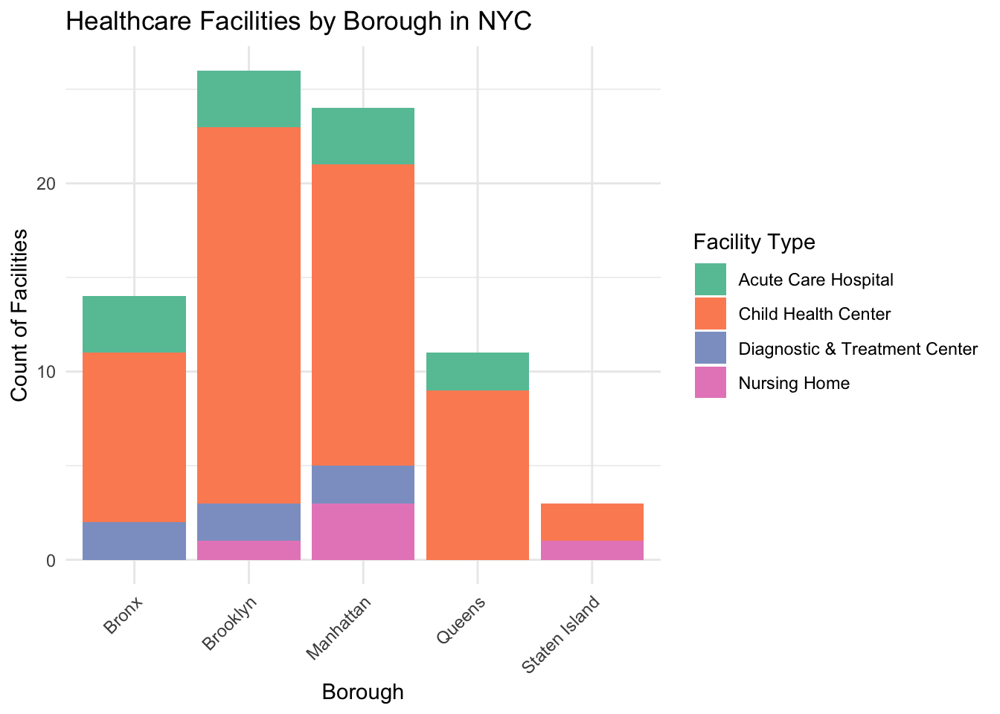

Hospital Data
According to NYC Health, every New Yorker, regardless of immigration status or ability to pay has the right to quality healthcare. However, access to healthcare facilities is not equitably distributed across New York. Immigrants and asylum seekers in particular might experience difficulties in getting to the care that they need when their options are limited.
Healthcare Facility by NYC Borough
In New York City, there is a vastly higher amount of healthcare facilities in Manhattan and Brooklyn than there is in the Bronx and Queens. Brooklyn, for example has 26 major healthcare facilities, while Queens only has 11. While immigrant populations are spread out across all 5 boroughs, many tend to reside in Queens and the Bronx.
Code
facilities_by_borough =
hospital_data %>%
group_by(Borough) %>%
summarise(Facility_Count = n())
ggplot(data = facilities_by_borough, aes(x = Borough, y = Facility_Count, fill = Borough)) +
geom_bar(stat = "identity") +
theme_minimal() +
labs(title = "Number of Facilities by Borough", x = "Borough", y = "Facility Count") +
scale_fill_brewer(palette = "Set2") 
Healthcare Facilities by Facility Type
In NYC, there are a surprisingly high amount of Child Health Centers available to immigrant populations, especially in comparison to other healthcare facility types. There are 56 Child Health Centers, while there are only 11 Acute Care Hospitals, and 5 Nursing Home Facilities. While it is good that children have a lot of options for receiving care, adults have relatively fewer options making it more difficult to get the services they need. The amount of nursing home options that can serve immigrants and asylum seekers is concerning, especially as the need increases over time.
Code
hospitals_by_type =
hospital_data %>%
group_by(`Facility Type`) %>%
summarise(Facility_Count = n())
ggplot(data = hospitals_by_type, aes(x = `Facility Type`, y = Facility_Count, fill = `Facility Type`)) +
geom_bar(stat = "identity") +
theme_minimal() +
labs(title = "Number of Facilities Types by Borough", x = "Borough", y = "Facility Count") +
theme_minimal() +
scale_fill_brewer(palette = "Set2") +
theme(
axis.text.x = element_text(angle = 45, hjust = 1)
)
Healthcare Facility Type by Borough
Looking further into the data, it is clear that while each borough in NYC des have a decent amount of Child Health Centers, Acute Care Hospitals, Diagnostic and Treatment Centers, and Nursing Homes are very limited for immigrant populations. Queens in particular doesn’t have any diagnotic treatment centers or nursing homes. So, asylum seekers or immigrants seeking these services in Queens would have to travel to get to these facilities, which is not always an option for these families.
Code
facility_type_by_borough =
hospital_data %>%
group_by(Borough, `Facility Type`) %>%
summarise(Facility_Count = n(), .groups = "drop") %>%
pivot_wider(names_from = `Facility Type`, values_from = Facility_Count, values_fill = 0)
facility_type_borough_long <- facility_type_by_borough %>%
pivot_longer(
cols = -Borough,
names_to = "Facility_Type",
values_to = "Count"
)
facility_type_by_borough %>%
knitr::kable(
col.names = c("Borough", "Acute Care Hospital", "Child Health Center",
"Diagnostic & Treatment Center", "Nursing Home"),
caption = "Healthcare Facilities by Borough in NYC"
) | Borough | Acute Care Hospital | Child Health Center | Diagnostic & Treatment Center | Nursing Home |
|---|---|---|---|---|
| Bronx | 3 | 9 | 2 | 0 |
| Brooklyn | 3 | 20 | 2 | 1 |
| Manhattan | 3 | 16 | 2 | 3 |
| Queens | 2 | 9 | 0 | 0 |
| Staten Island | 0 | 2 | 0 | 1 |
| Borough | Acute Care Hospital | Child Health Center | Diagnostic & Treatment Center | Nursing Home |
|---|---|---|---|---|
| Bronx | 3 | 9 | 2 | 0 |
| Brooklyn | 3 | 20 | 2 | 1 |
| Manhattan | 3 | 16 | 2 | 3 |
| Queens | 2 | 9 | 0 | 0 |
| Staten Island | 0 | 2 | 0 | 1 |
Code
ggplot(facility_type_borough_long, aes(x = Borough, y = Count, fill = Facility_Type)) +
geom_bar(stat = "identity") +
labs(
title = "Healthcare Facilities by Borough in NYC",
x = "Borough",
y = "Count of Facilities",
fill = "Facility Type"
) +
theme_minimal() +
scale_fill_brewer(palette = "Set2") +
theme(
axis.text.x = element_text(angle = 45, hjust = 1)
)

Resources
While this data shows stark disparities that need to be addressed through policy changes and interventions, there are resources in NYC that asylum seekers can utilize. There is an NYC Immigrant Affairs Hotline at 212-788-7654 that people can call to find information regarding low or no-cost city services, including healthcare services. Families can also take advantage of the NYC Cares platform online, which has information in many different languages regarding insurance eligibility, and no-cost services.